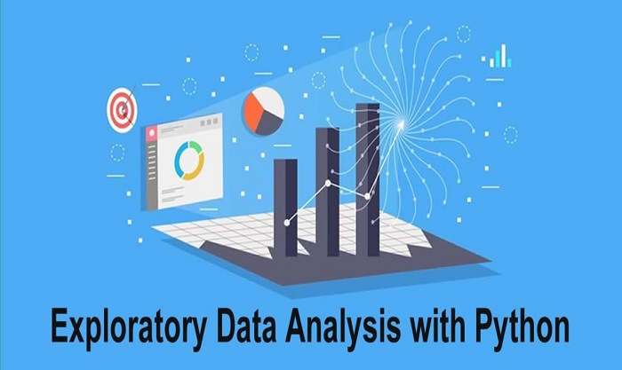

In This Complete Project,The T20 Cricket WEB Scraped data is cleaned using libraries in Python to get csv file, This csv file is pre cleaned in EXCEL and Using power BI created a interactive Dashboard to find Potential Team.
In This Project We Imported sales data into Excel, Created a pivot table to summarize the data by gender, Analyzed the pivot table to identify trends and patterns, And Created charts and graphs to visualize the findings.
Transformed raw data into interactive Dashboard, To track KPI's, Compare regional performance, Analyze product-level trends and Identify High-Value Customers .
Made use of Tableau to create meaningful visualization by extracting raw data and created interactive dashboard to gain a meaningful insights from the data.

Using EDA summarized sales data to understand its underlying patterns, relationships, and created visualization to to gain insights about sales using Python programming language.
In this project by the use of Python and its libraries, extracted the list of top companies in india according to 2021 Fortune list, which can then be used for various purposes such as research, data visualization, and machine learning.
In This project We Used SQL to gain insights into the store's operations, customer segmentation, trends, artist effectiveness, artist growth, customer interest, and money spent by customers.